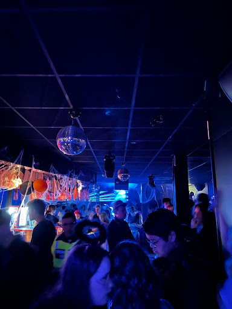
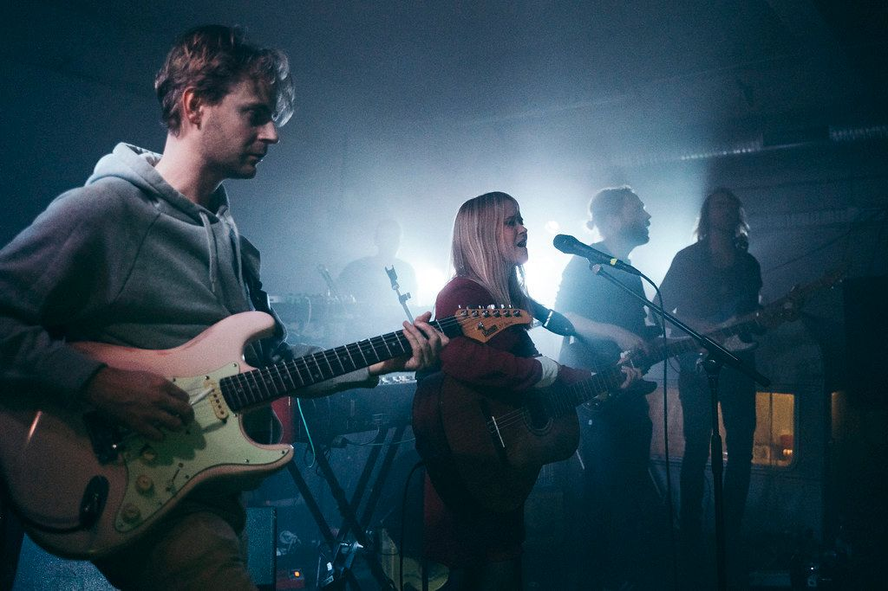
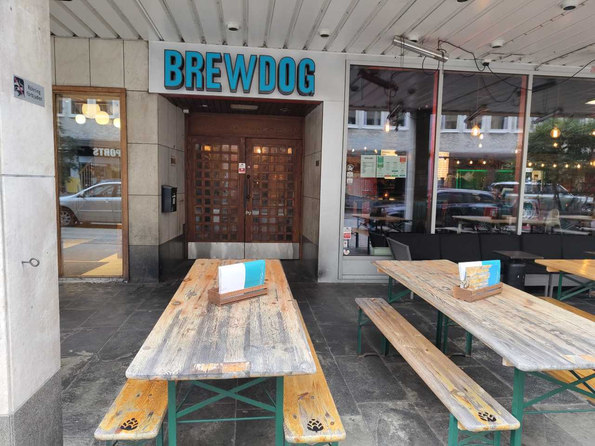
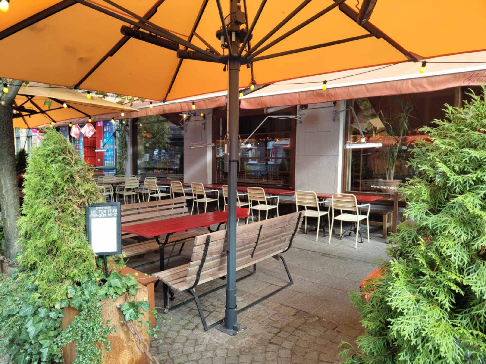

Mitt i folkets park finner du Moriska Paviljongen där du kan välja mellan tre olika dansgolv. Ta en lugnare kväll i bistron eller satsa fullt och prova allt de olika dansgolven har att erbjuda under helgen. Livemusik varvas med dj-spelningar och olika typer av temakvällar.
Adress:
Norra Parkgatan 2
Öppettider:
Länge har Étage tagit hand om flera av Malmös olika festdemografier med generösa öppettider och varierande åldersgränser flera dagar i veckan.
Adress:
Stortorget 6
Öppettider:
Plan B ligger en bit utanför Malmös innerstad, men den är väl värd ett besök. Både livemusik och klubbkvällar finns det gott om. De anordnar många spelningar med lokala och internationella band i alla olika genrer. Oavsett om du gillar indie eller metal finns det en spelning för dig.
Adress:
Norra Grängesbergsgatan 26B
Öppettider:
Både liveframträdanden och klubbkvällar finns på Babel. Med två stycken dansgolv går det att hitta något som är perfekt för dig.
Adress:
Spångatan 38
Öppettider:
På Brewdog finns något för alla. Här finns det brädspel, shuffleboard och såklart goda öl. Man kan alltid beställa Brewdogs egna öl men de har även ett stort utbud av andra öl på både fat och flaska. Vill man testa flera kan man beställa halvglas. Älskar man öl är det till Brewdog man ska gå
Adress:
Baltzarsgatan 25
Öppettider:
På möllan finner man Metro där bra öl och vin är i fokus. När man går in på metro känns det som om man gått ner i sin polares föräldrars gillestuga från 70-talet. Standard på Metro är även live-gig och DJ-spelningar.
Adress:
Ängelholmsgatan 14
Öppettider:
På Grand i Malmö kan du ta ståltrappan upp till Manhattan. Tankarna åker direkt till hipsterhäng och gallerier i New York. Inte minst då man kan gå ut och sätta sig på innergården. När man även räknar in vimlet av kulturpersonligheter och möllan stammisar kan man skymta en liten bit av Manhattan inne i Malmö.
Adress:
Monbijougatan 17
Öppettider: